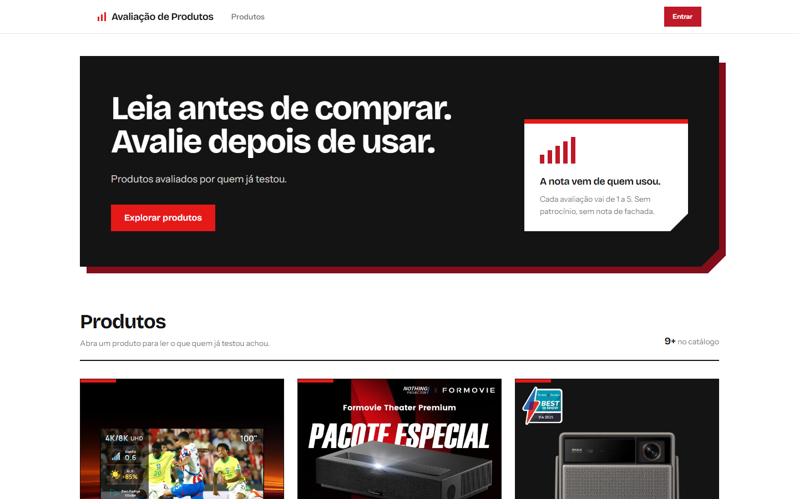
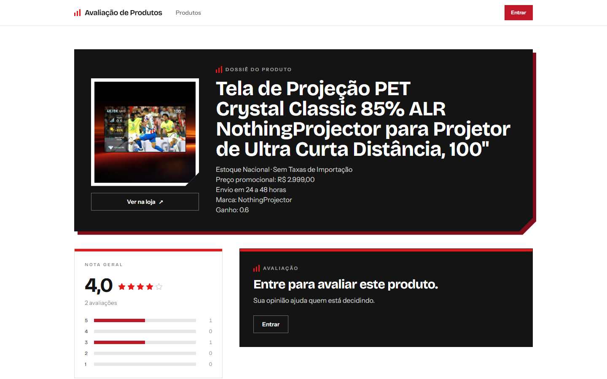
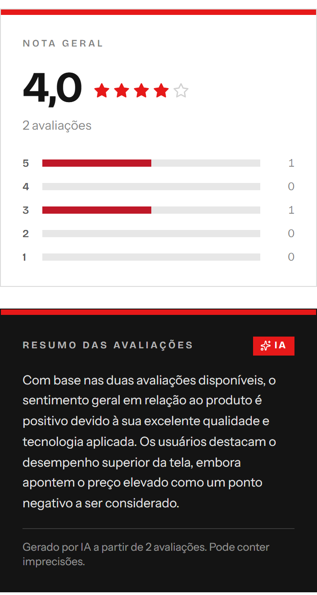

Avaliação de Produtos
Catálogo com avaliações de 1 a 5, nota geral e distribuição por nota. Um agente de IA resume os comentários de cada produto, e um workflow do n8n importa produtos de uma loja externa pela API.

Destaques
-
Resumo por IA resiliente
O resumo fica em cache e só é refeito quando chegam avaliações novas. Sem a IA, a página mostra o último resumo salvo; depois de uma falha do modelo, o produto espera 5 minutos antes de tentar de novo.
-
Contra injeção de prompt
Os comentários entram como dados, em JSON com
<e>escapados, num bloco delimitado, e o agente é instruído a não seguir instruções escritas neles. Há testes para isso. -
Camadas e injeção de dependência
REST e tRPC chamam o mesmo procedimento; os serviços dependem de interfaces de repositório e são testados com repositórios em memória. Um caminho único de erros: domínio, tRPC, HTTP.
-
Detalhes que contam
Upload validado pelos bytes do arquivo, não pelo
Content-Type. Paginação por keyset com cursor validado. Sessão assinada com HMAC e comparação em tempo constante.

